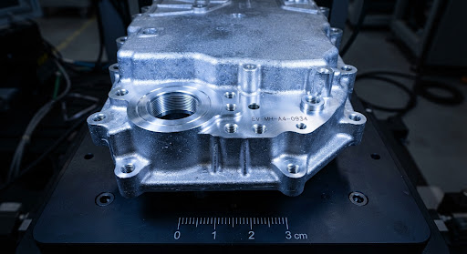
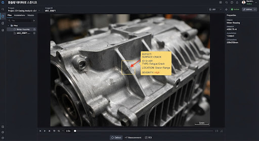
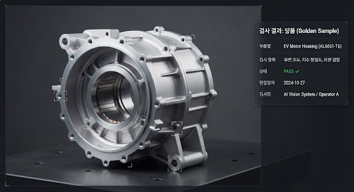
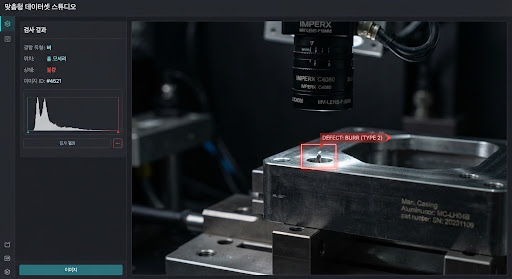
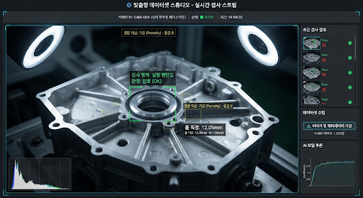
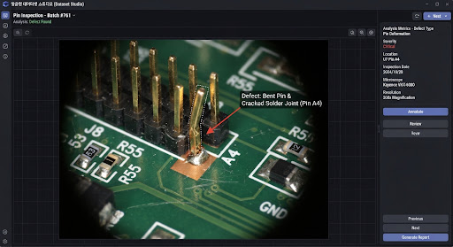
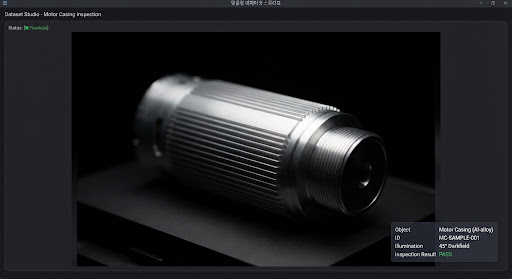
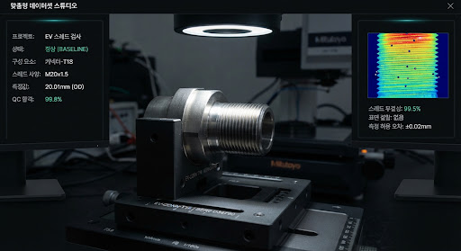

precision_manufacturing
Line #3 - 정밀 EV 모터 하우징 검사 데이터셋
v2.4 LOCKED
DVC HASH: 9fa2c4d · LOCAL REPOSITORY AIR-GAPPED
TOTAL RAW
1,280장
|
정상 1,150
불량 130
SYNTHETIC AUG
+5,120장
PatchCore 레퍼런스 주입 완료
photo_size_select_actual
4096 × 3000 RAW (12-bit Mono)
175%

#DEF-042 [Surface Scratch]
99.4%
L: 1.28mm
PIN #04 [NOMINAL]
Δ 0.01mm
FRAME TRIGGER
PLC SYNC #18492
INSPECTION LATENCY
28.4ms
OPC-UA NODE
192.168.10.14
5.0 mm (48.2 px/mm)
IMAGE STRIP: BATCH #08 (CAM 03)
Showing 8 of 1,280

DEFECT
OK
DEFECT
OK

OK
DEFECT
OK
OK